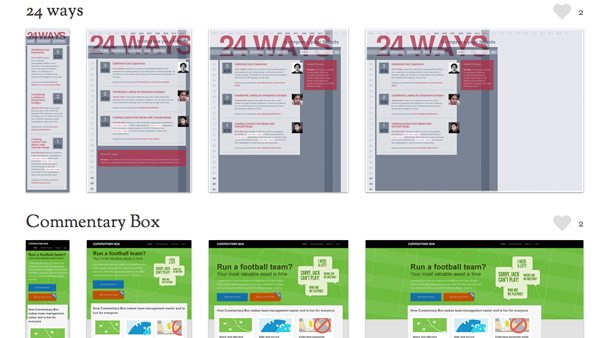

第2回HTML5読書会
4,5章
kzfm
Dec 10, 2011
kzfm
Dec 10, 2011
セレクタとは、HTMLドキュメント内の要素を検索する際に指定するパターン
1番目のp
2番目のp
3番目のp
1番目のp
2番目のp
3番目のp

responsivepxが地味に便利です
| Item | Price | Quantity | Total |
|---|---|---|---|
| Coffee mug | $10.00 | 5 | $50.00 |
| Polo shirt | $20.00 | 5 | $100.00 |
| Red stapler | $9.00 | 4 | $36.00 |
| Subtotal | $186.00 | ||
| Shipping | $12.00 | ||
| Total Due | $198.00 | ||
サンプルHTMLはGitにおいておきました。


<script type='text/javascript'>
// Say hello world until the user starts questioning
// the meaningfulness of their existence.
function helloWorld(world) {
for (var i = 42; --i >= 0;) {
alert('Hello ' + String(world));
}
}
</script>
<style>
p { color: pink }
b { color: blue }
u { color: 'umber' }
</style>
<script type='text/javascript'>
// Say hello world until the user starts questioning
// the meaningfulness of their existence.
function helloWorld(world) {
for (var i = 42; --i >= 0;) {
alert('Hello ' + String(world));
}
}
</script>
<style>
p { color: pink }
b { color: blue }
u { color: 'umber' }
</style>
The best way to predict the future is to invent it.
A distributed system is one in which the failure of a computer you didn’t even know existed can render your own computer unusable.